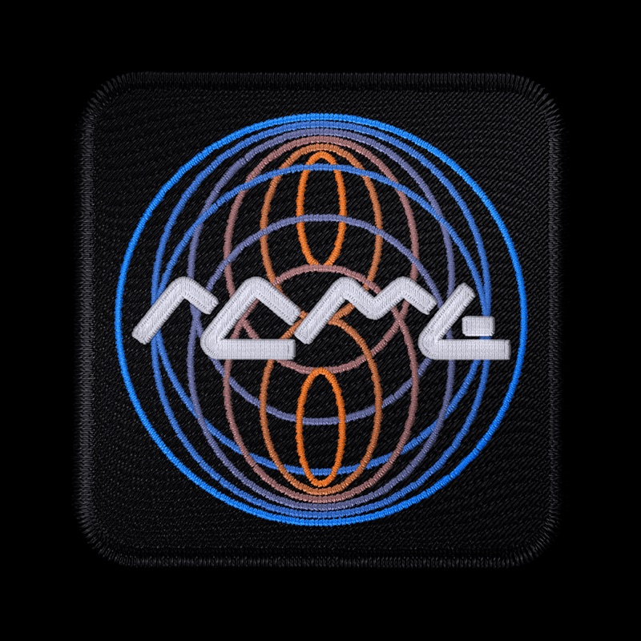

Concentric circles oscillating out from the center. Orange to blue gradient. Customized, tube-like font. Two elliptical orange orbits. This evokes, to me, the idea of planets revolving in the solar system.
SSEP Mission Patch
Goal: Use the tool to find new ideas. Then critique and choose.
01Overview
9.1 · Mon Oct 26 · online
Today you’re going to use your tool to come up with new directions/ideas for the patch. First you’ll generate a bunch of variations. Then you’ll choose up to three and go back to pen and paper and make new designs.
02In class
100 minutes

Concentric circles oscillating out from the center. Orange to blue gradient. Customized, tube-like font. Two elliptical orange orbits. This evokes, to me, the idea of planets revolving in the solar system.
03Homework
4–5 hours
ART 3041 · A.I. for Designers · Fall 2026 · Baruch SSEP Mission Patch Competition